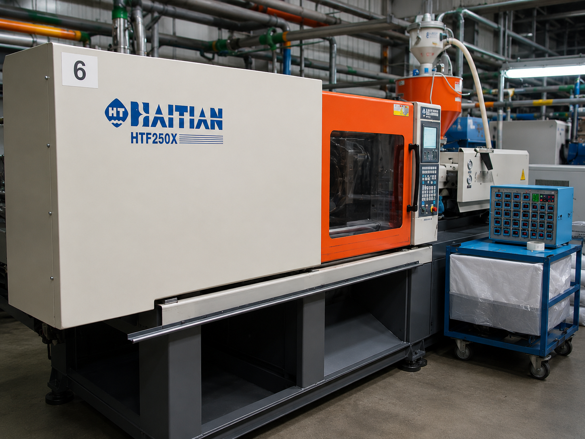
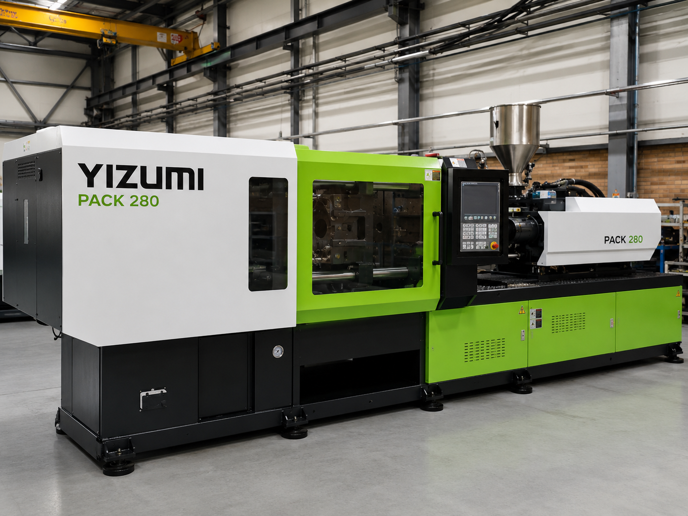
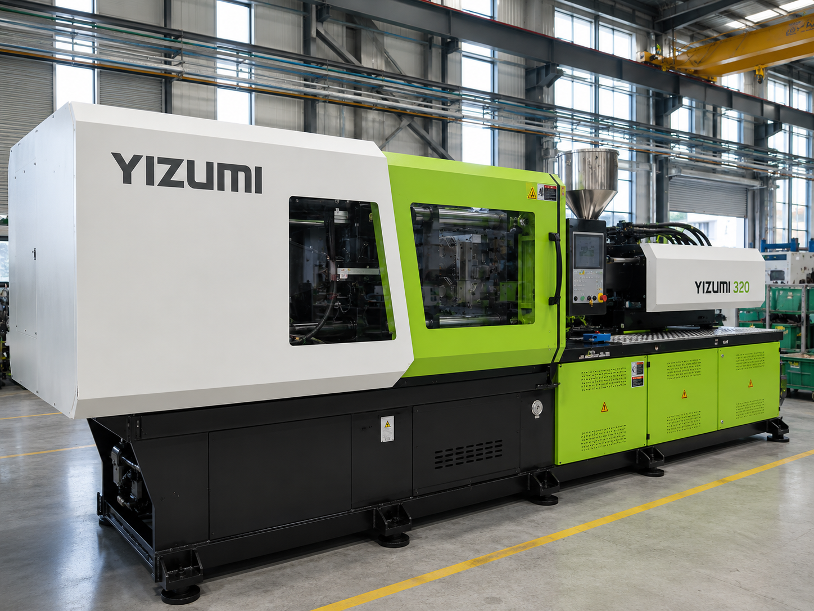
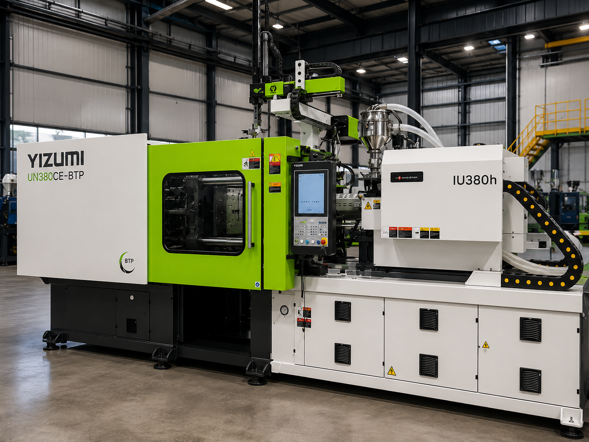
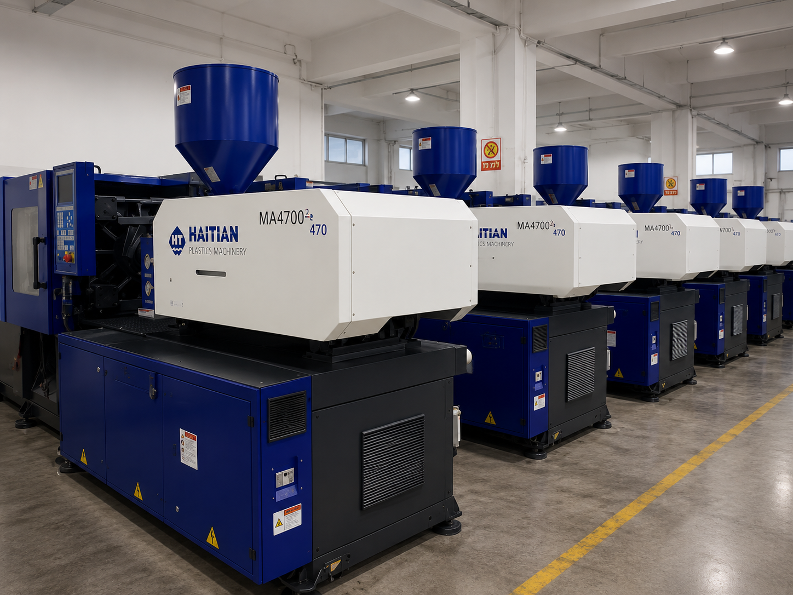
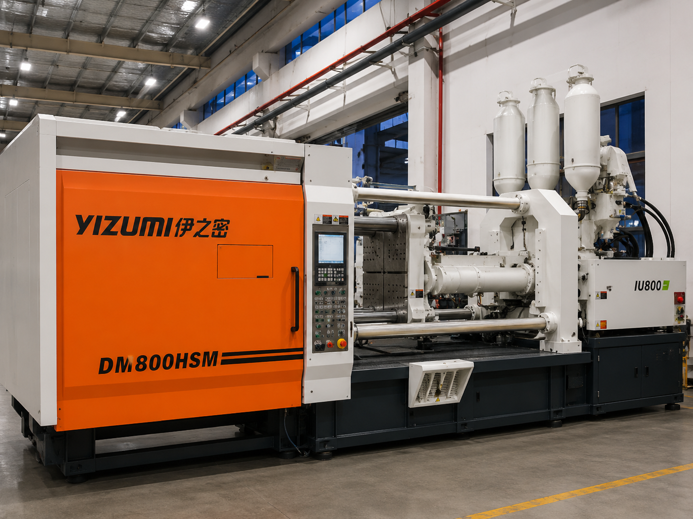

מכונות ויכולות ייצור
מערך ייצור מתקדם להזרקת פלסטיק מדויקת
ב־RYS Plast פועל מערך ייצור תעשייתי הכולל מכונות הזרקה, ציוד תומך ותהליכי עבודה מסודרים, המאפשרים ייצור מוצרי פלסטיק איכותיים, עקביים ומותאמים לדרישות הלקוח.
12 מכונות הזרקה
90 עד 1,080 טון
ייצור סדרתי
בקרת איכות
מערך המכונות
- 12 מכונות הזרקה פעילות
- כוח לחיצה בין 90 ל־1,080 טון
- ייצור לפי תבנית קיימת או חדשה
- ליווי משלב התכנון ועד האספקה
יכולות ייצור
יכולות ייצור שמשרתות את הפרויקט
מערך המכונות במפעל נועד לאפשר ייצור מדויק, יציב וחוזר על עצמו, משלב התאמת התבנית והחומר ועד ייצור בפועל ובקרת איכות. הדגש הוא לא רק על המכונות עצמן, אלא על תהליך ייצור שמספק תוצאה עקבית ואמינה.
הזרקת פלסטיק
ייצור רכיבי פלסטיק בתהליך הזרקה עבור מוצרים תעשייתיים, טכניים ומותאמים.
ייצור סדרתי
יכולת לייצר בכמויות משתנות תוך שמירה על אחידות, איכות וזמני תגובה.
התאמה לפי מפרט
עבודה לפי דרישות מוצר, חומר גלם, תבנית, גימור וצרכי שימוש.
בקרת איכות
בדיקות ותהליך עבודה מסודר שמסייעים לשמור על תוצאה יציבה לאורך הייצור.
מערך מכונות
מערך מכונות הזרקה
מכונות ההזרקה במפעל מאפשרות ייצור מוצרים ורכיבים מפלסטיק במגוון צורות, גדלים ושימושים. המערך מתאים ללקוחות הזקוקים לייצור לפי תבנית קיימת, התאמות מוצר, ייצור חוזר או פתרון תעשייתי מותאם.

YIZUMI
כוח נעילה: 90 טון
מכונת הזרקה תעשייתית כחלק ממערך הייצור של RYS Plast, מיועדת לייצור רכיבי פלסטיק בדיוק, יציבות והתאמה לדרישות הפרויקט.

VICTOR
כוח נעילה: 180 טון
מכונת הזרקה תעשייתית כחלק ממערך הייצור של RYS Plast, מיועדת לייצור רכיבי פלסטיק בדיוק, יציבות והתאמה לדרישות הפרויקט.

JSW
כוח נעילה: 220 טון
מכונת הזרקה תעשייתית כחלק ממערך הייצור של RYS Plast, מיועדת לייצור רכיבי פלסטיק בדיוק, יציבות והתאמה לדרישות הפרויקט.

HAITIAN
כוח נעילה: 250 טון
מכונת הזרקה תעשייתית כחלק ממערך הייצור של RYS Plast, מיועדת לייצור רכיבי פלסטיק בדיוק, יציבות והתאמה לדרישות הפרויקט.

YIZUMI PACK
כוח נעילה: 280 טון
מכונת הזרקה תעשייתית כחלק ממערך הייצור של RYS Plast, מיועדת לייצור רכיבי פלסטיק בדיוק, יציבות והתאמה לדרישות הפרויקט.

HAITIAN
כוח נעילה: 320 טון
מכונת הזרקה תעשייתית כחלק ממערך הייצור של RYS Plast, מיועדת לייצור רכיבי פלסטיק בדיוק, יציבות והתאמה לדרישות הפרויקט.

YIZUMI
כוח נעילה: 320 טון
מכונת הזרקה תעשייתית כחלק ממערך הייצור של RYS Plast, מיועדת לייצור רכיבי פלסטיק בדיוק, יציבות והתאמה לדרישות הפרויקט.

YIZUMI
כוח נעילה: 380 טון
מכונת הזרקה תעשייתית כחלק ממערך הייצור של RYS Plast, מיועדת לייצור רכיבי פלסטיק בדיוק, יציבות והתאמה לדרישות הפרויקט.

HAITIAN
כוח נעילה: 470 טון
מכונת הזרקה בעלת כוח נעילה גבוה, מתאימה לייצור רכיבים גדולים יותר ולפרויקטים הדורשים יציבות, עוצמה ויכולת ייצור תעשייתית.

HAITIAN
כוח נעילה: 550 טון
מכונת הזרקה בעלת כוח נעילה גבוה, מתאימה לייצור רכיבים גדולים יותר ולפרויקטים הדורשים יציבות, עוצמה ויכולת ייצור תעשייתית.

YIZUMI
כוח נעילה: 800 טון
מכונת הזרקה בעלת כוח נעילה גבוה, מתאימה לייצור רכיבים גדולים יותר ולפרויקטים הדורשים יציבות, עוצמה ויכולת ייצור תעשייתית.

HAITIAN
כוח נעילה: 1,080 טון
מכונת הזרקה בעלת כוח נעילה גבוה, מתאימה לייצור רכיבים גדולים יותר ולפרויקטים הדורשים יציבות, עוצמה ויכולת ייצור תעשייתית.
תהליך ייצור
דיוק תפעולי ותהליך מבוקר
תהליך הייצור נשען על שילוב בין מכונות, ניסיון מקצועי, סביבת עבודה מסודרת ובקרה לאורך הדרך. כך ניתן להפחית תקלות, לשמור על אחידות בין יחידות ולספק מוצר שמתאים לדרישות השימוש בפועל.
תהליך עבודה מסודר
בדיקת התאמה לפני ייצור
מעקב אחר איכות
שיפור ודיוק לפי צורך
סביבת ייצור
סביבת ייצור מסודרת
סביבת ייצור נקייה ומאורגנת מאפשרת עבודה יעילה יותר, ניהול טוב יותר של תהליכים ושמירה על איכות לאורך שלבי הייצור. המפעל בנוי לתת מענה מקצועי לפרויקטים תעשייתיים, מוצרי בנייה ורכיבי פלסטיק בהתאמה אישית.
אחידות בייצור
ניהול תהליך
בקרת איכות
מענה מהיר

תחומי שימוש
מתאים למגוון צרכי ייצור
רכיבים לתעשייה
מוצרי בנייה
פתרונות טכניים
מוצרים בהתאמה אישית
ייצור לפי תבנית
ייצור בכמויות משתנות
לפני ייצור
מה חשוב לדעת לפני תחילת ייצור?
לפני שמתחילים תהליך ייצור, כדאי לוודא שיש מענה לכמה שאלות מרכזיות. הבנת הצורך מראש מאפשרת להגיע לתוצאה טובה יותר בזמן ובתקציב מתאימים.
- סוג המוצר והשימוש שלו
- חומר הגלם הנדרש
- כמות ייצור רצויה
- קיום תבנית קיימת או צורך בתכנון
- דרישות גימור, צבע ועמידות
- לוחות זמנים ואספקה